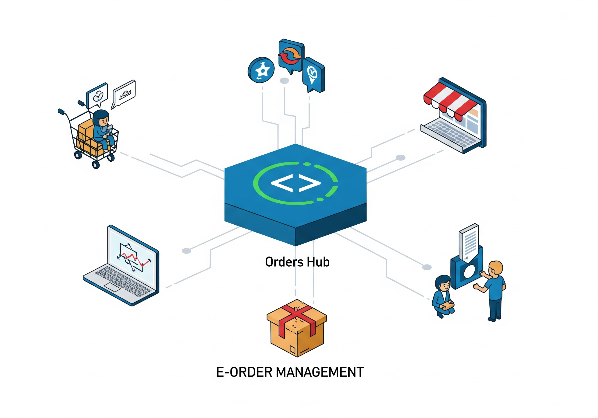

Hub Central de Pedidos: Solução de Integração para E-commerce

Como a centralização de marketplaces pode transformar a gestão de vendas online
O e-commerce brasileiro cresceu exponencialmente, e com ele a complexidade de gerenciar vendas em múltiplas plataformas. Lojistas que vendem no Shopee, Mercado Livre, Amazon e outros marketplaces enfrentam um desafio diário: como centralizar e gerenciar eficientemente todos os pedidos sem perder tempo alternando entre diferentes interfaces?
É nesse contexto que desenvolvemos o Hub Central de Pedidos: uma plataforma unificada de gestão que centraliza todos os pedidos de diferentes marketplaces em uma única interface intuitiva e eficiente.
O problema
- Múltiplas interfaces: Vendedores precisam acessar diferentes plataformas para gerenciar pedidos
- Tempo perdido: Horas diárias alternando entre Shopee, Mercado Livre e outras plataformas
- Informações fragmentadas: Dificuldade para ter uma visão consolidada das vendas
- Busca ineficiente: Localizar um pedido específico exige pesquisar em cada marketplace separadamente
- Falta de métricas unificadas: Impossibilidade de analisar performance geral das vendas
A proposta: Hub Central de Pedidos
Uma plataforma web unificada que funciona como centro de controle:
- Interface única para visualização de pedidos de todos os marketplaces
- Sistema de busca avançado que localiza pedidos por código, cliente, produto ou endereço
- Dashboard executivo com métricas consolidadas de vendas e entregas
- API REST para integração com sistemas existentes
- Paginação inteligente para gerenciar grandes volumes de pedidos eficientemente
Benefícios
- Para vendedores: centralização completa eliminando perda de tempo entre plataformas
- Para gestores: visibilidade total das operações com métricas unificadas em tempo real
- Para equipes: busca instantânea localiza qualquer pedido em segundos
- Para negócios: decisões baseadas em dados consolidados de todas as plataformas de venda
- Para crescimento: base tecnológica escalável preparada para integração com novos marketplaces
MVP desenvolvido
- Interface React moderna com design responsivo e profissional
- Integração inicial com Shopee e Mercado Livre usando dados estruturados
- Sistema de busca unificada que pesquisa simultaneamente em todos os marketplaces
- API REST completa com paginação, filtros e endpoints documentados
- Dashboard executivo com estatísticas em tempo real de pedidos e status
- Arquitetura escalável preparada para integração com APIs reais dos marketplaces
Modelo de implementação
- SaaS (Software as a Service) com assinatura mensal baseada no volume de pedidos
- Setup personalizado para integração com sistemas existentes da empresa
- Suporte técnico para implementação e treinamento de equipes
- Customizações para necessidades específicas de cada negócio
- API licensing para desenvolvedores que desejam integrar com seus próprios sistemas
Visão de futuro
A plataforma pode evoluir para um ecossistema completo de e-commerce: integração com mais marketplaces (Amazon, Magalu, Casas Bahia), automação de processos (atualização automática de estoque, sincronização de preços), inteligência artificial para previsão de demanda, e analytics avançado para otimização de vendas.
Tecnologias utilizadas
- Frontend: React 18 + Vite + Tailwind CSS para interface moderna
- Backend: Node.js + Express.js para API robusta e escalável
- Arquitetura: RESTful API com paginação e filtros avançados
- Deploy: Preparado para containers Docker e cloud hosting
- Documentação: Completa para desenvolvedores e usuários finais
Chamado à ação
Se você gerencia vendas em múltiplos marketplaces e busca eficiência operacional através da tecnologia, esta solução foi desenvolvida pensando em você. O Hub Central de Pedidos já está funcional e pronto para demonstração.
Experimente agora mesmo:
- Repositório disponível — contato: suporte@caracore.com.br
- Execute:
.\start.ps1 - Acesse:
http://localhost:5173
Interessado em implementação corporativa? Entre em contato para uma demonstração personalizada e discussão sobre customizações específicas para seu negócio.
Hashtags: #Ecommerce #Marketplaces #Integração #APIs #React #NodeJS #REST #Dashboard #SaaS #VendasOnline #ArquiteturaDeSoftware